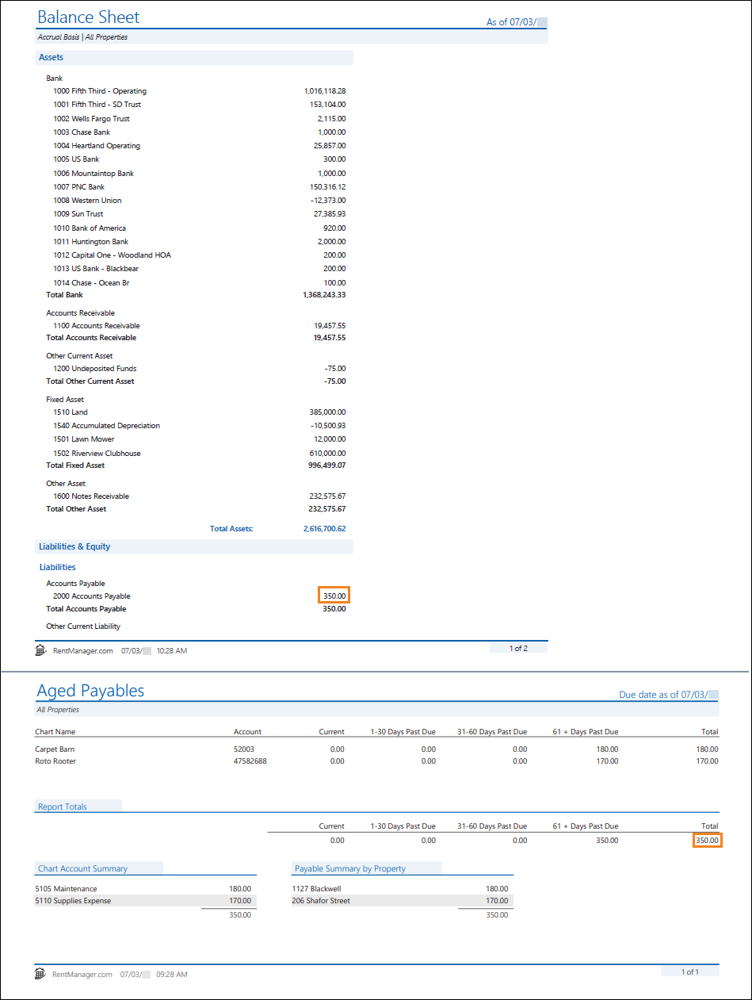
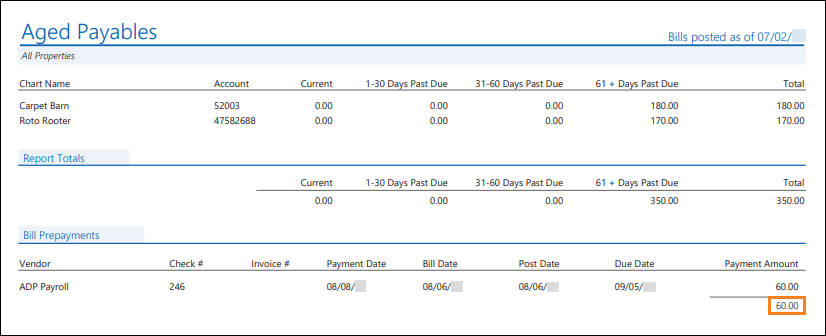
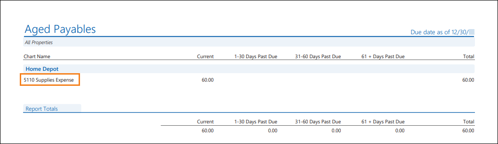

Source: https://rmxhelp.rentmanager.com/Topics/Express/KB/Report-Aged-Payables-Balance-Sheet.htm
Aged Payables and Balance Sheet
Both the Aged Payables and Balance Sheet reports provide the balance of your accounts payable; however each includes transactions from different sources and limits transactions based on their dates.
Warning
The information contained here does not replace the advice of an accountant. If you are unclear about how to interpret the data presented in the related reports, please consult your accountant.
The Aged Payables report can be used to review your property's monthly expenses that are upcoming and outstanding as well as displaying credits. This report is also helpful because it generates vendor and bill information for unpaid bills that are categorized as overdue or due within 1-30 days, 31-60 days, and 61 or more days.
The Balance Sheet provides a snapshot of your management company's financials at a specific point of time. It's a life-to-date statement. Additionally, it satisfies the fundamental accounting equation: Assets=Liabilities + Equities. The Balance Sheet provides valuable information on your company's overall financial position (i.e., its longevity and liquidity).
Related Privileges
| Group | Privilege | Column |
|---|---|---|
| Letter/Email Templates/Reports/Packets | Run reports | Enabled |
| Run accounting reports | Enabled |
Additionally, on the Reports tab, you must have access to Aged Payables and Balance Sheet.
For more information, refer to Control User Access.
When run with comparable report options, the Aged Payables' Total column matches the Balance Sheet’s Accounts Payable value.

Report Options
To populate Aged Payables and Balance Sheet reports that complement each other, use the report option combinations listed in the table below. Report options not mentioned do not affect comparability and can be left on their default setting.
| Aged Payables | Balance Sheet | Description |
|---|---|---|
|
Properties to Include |
Properties/Owners to Include |
The same properties or property group must be selected for both reports. If the Owners tab is selected on the Balance Sheet, then on the Aged Payables report, select the properties of those selected owners. |
|
As of Date |
As of Date |
The same date must be selected for both reports. |
|
Date Restriction On |
n/a |
Select Post Date. This date reflects the day on which bills expense general ledger accounts on an accrual basis, which will be comparable with the Balance Sheet's accounting method. |
|
Show Credits |
n/a |
Check Show Credits. The Balance Sheet report automatically includes all credits. |
|
n/a |
Cash or Accrual |
Select Accrual for the accounting method option. |
Troubleshooting Discrepancies
While running the reports with the suggested report options above allows the reports to examine the same data, there are other factors that can cause discrepancies between these value totals.
Bill Prepayments
The Aged Payables report's Bill Prepayments subreport displays the transaction details of checks and credits that pay a bill with a future Post Date or Due Date. When this subreport displays, the report Total amount differs from the Balance Sheet’s Accounts Payable value. However, when the subreport's Payment Amount total is subtracted from the Report Total's Total amount, the result should match the Balance Sheet’s Accounts Payable value.

Bills Dated Prior to the General Ledger (GL) Start Date
The Aged Payables report includes transactions dated before the GL start date, while the Balance Sheet does not. To identify these transactions, run or refresh the Aged Payables report and select the As of Date one day prior to the GL start date and Detail or Summary set to Detail. For example if the GL start date is 02/01/2026, select the As of Date 01/31/2026. In the report, click on the chart name to drill down to the bill details.

If you're unsure of your GL start date, you can locate it in system preferences. For more information, refer to General Ledger Settings (System Preferences).
Transactions from Sources other than Bills
The Aged Payables report includes bills created via the Add Bill tool, but not payables from elsewhere in Rent Manager. The Balance Sheet includes transactions from any source (such as a journal entry) where an asset, liability or equity chart account was selected.
To locate these transactions from the Balance Sheet, click on the chart account number value to drill down to the General Ledger and look for transactions from sources other than BILL, BILLPAY or CREDIT (e.g., CREDIT, JOURNL, CC CHG, BNKDEP). Another option is to rerun the Balance Sheet report on Cash Basis as it displays all transactions that came from another source.